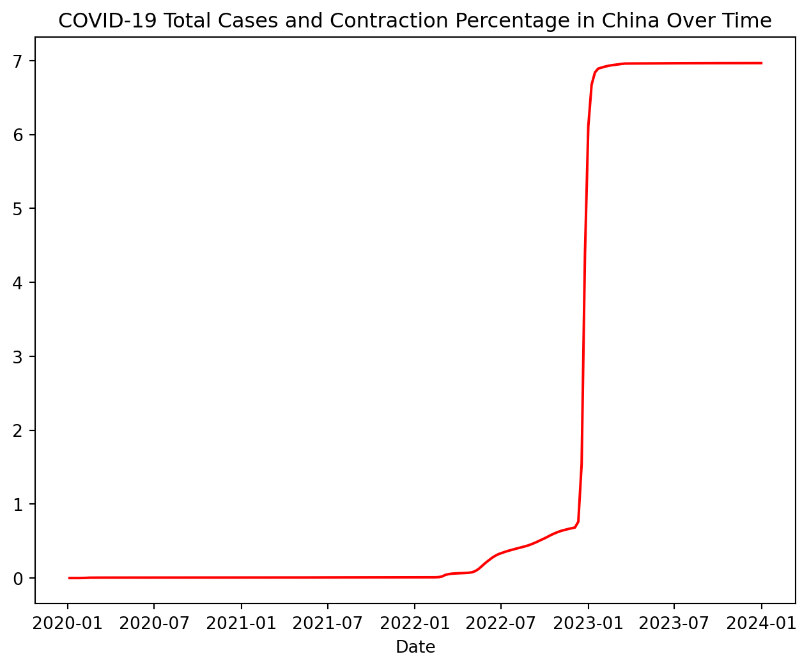
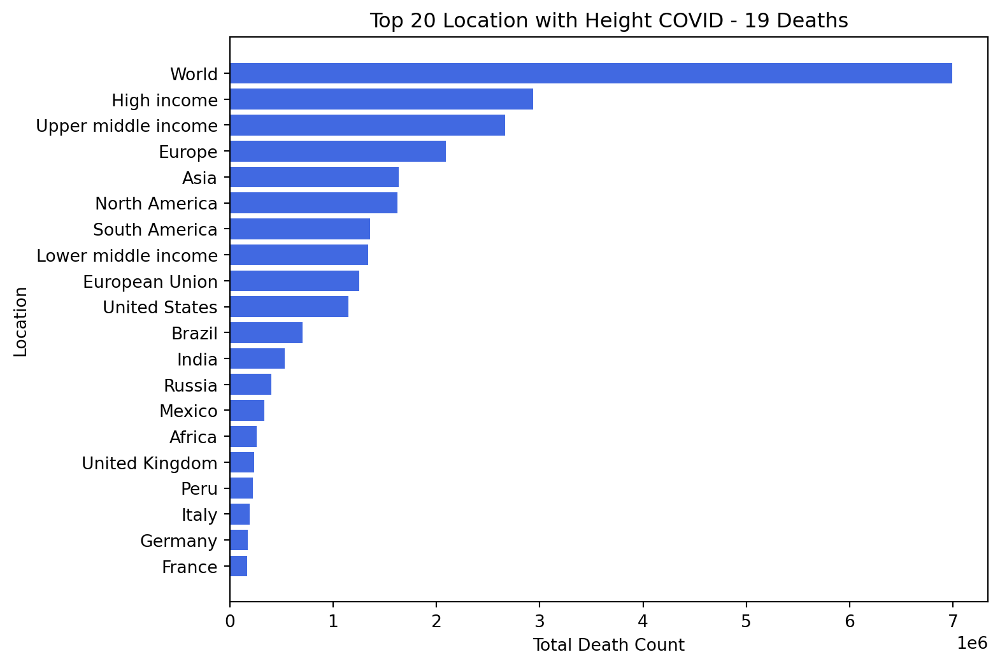
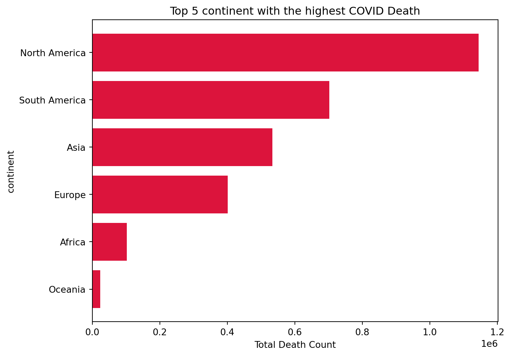
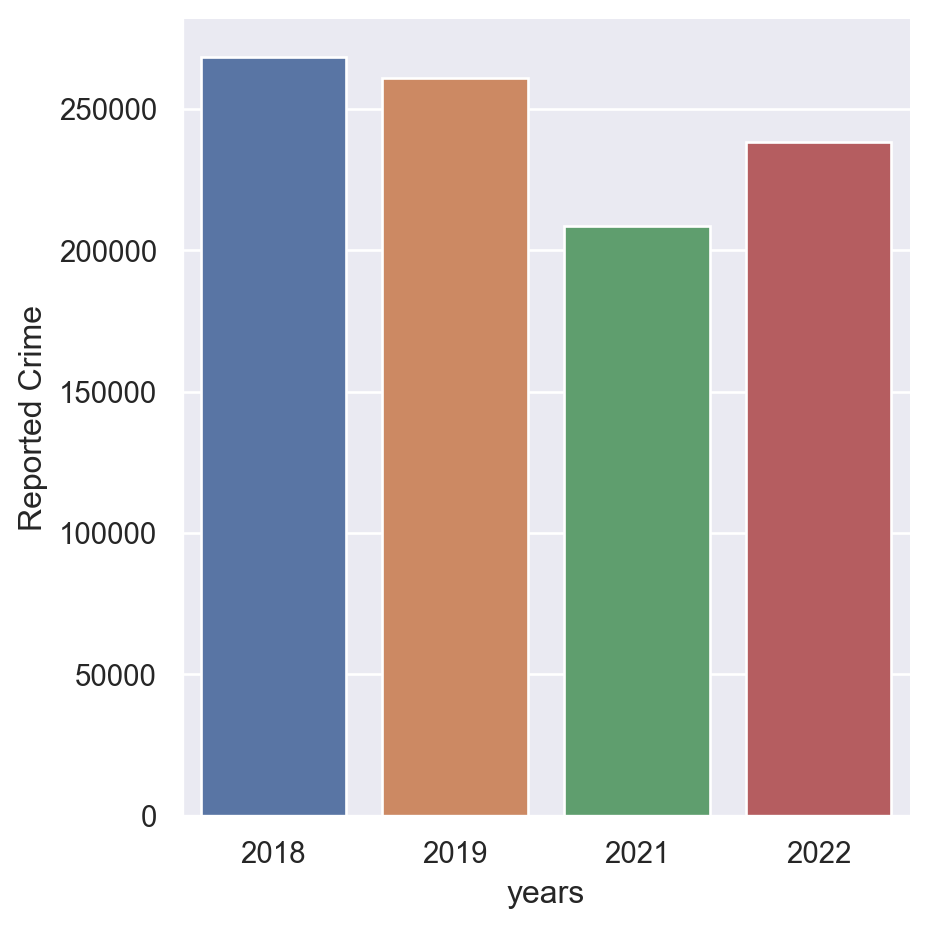

Define server, database, driver trusted_connection for local machine database connection below
server =r"DESKTOP-FT8NVCI\SQLEXPRESS"# use 'r' to handle backlashesdatabase ="Portfolio"driver ="ODBC Driver 17 for SQL Server"# check the driver version from above steptrusted_connection ="yes"# uses windows authentication
List the cases of total covid contraction and deaths ordered by date and countries alphabetically
query_1 ="select location, date, total_cases, total_deaths, new_cases, population from Portfolio.dbo.CovidDeaths order by 1,2"df = pd.read_sql(query_1, conn)print(df)
location date total_cases total_deaths new_cases \
0 Afghanistan 2020-01-05 NaN NaN 0.0
1 Afghanistan 2020-01-12 NaN NaN 0.0
2 Afghanistan 2020-01-19 NaN NaN 0.0
3 Afghanistan 2020-01-26 NaN NaN 0.0
4 Afghanistan 2020-02-02 NaN NaN 0.0
... ... ... ... ... ...
276136 Zimbabwe 2023-12-03 265975.0 5730.0 0.0
276137 Zimbabwe 2023-12-10 265975.0 5730.0 0.0
276138 Zimbabwe 2023-12-17 266025.0 5730.0 50.0
276139 Zimbabwe 2023-12-24 266048.0 5731.0 23.0
276140 Zimbabwe 2023-12-31 266048.0 5731.0 0.0
population
0 41128772.0
1 41128772.0
2 41128772.0
3 41128772.0
4 41128772.0
... ...
276136 16320539.0
276137 16320539.0
276138 16320539.0
276139 16320539.0
276140 16320539.0
[276141 rows x 6 columns]
List the total cases and total deaths, and calculate the percentage of deaths relative to the total COVID-19 cases in your country.
query_2 ="select location, date, total_cases, total_deaths, (total_deaths/total_cases)*100 as Deathpercentage from Portfolio.dbo.CovidDeaths where location like '%china%' and total_cases is not null order by 1,2"df_1 = pd.read_sql(query_2, conn)df_1plt.figure(figsize = (8,6))plt.plot(df_1['date'], df_1['Deathpercentage'], color ='red')plt.xlabel('Date')plt.ylabel('Percentage of Covid_19 Deaths')plt.title('Covid19 Deaths Daily in China')plt.grid(False)plt.show()
The total Covid-19 contraction cases verse the total population
query_3 ="select location, date, total_cases, population, (total_cases/population)*100 as contractionpercentage from Portfolio.dbo.CovidDeaths where location like '%china%' and total_cases is not null order by 2"df_2 = pd.read_sql(query_3, conn)df_2plt.figure(figsize=(8,6))plt.plot(df_2['date'], df_2['contractionpercentage'], label ='Contraction Percentage', color ='red')plt.xlabel('Date')plt.title('COVID-19 Total Cases and Contraction Percentage in China Over Time')plt.show()

countries with highest Infection rate compared to population
query_4 ="select location, max(cast(total_deaths as int)) as TotalDeathCount from dbo.CovidDeaths where total_deaths is not null group by location order by TotalDeathCount desc "df_3 = pd.read_sql(query_4, conn)df_3df_sorted = df_3.sort_values(by ='TotalDeathCount', ascending=False).head(20)plt.figure(figsize= (8,6))plt.barh(df_sorted['location'], df_sorted['TotalDeathCount'], color ='royalblue')plt.xlabel('Total Death Count')plt.ylabel('Location')plt.title('Top 20 Location with Height COVID - 19 Deaths')plt.gca().invert_yaxis()plt.show()

Find out the country with Highest death per population
query_5 ="select location, max(cast(total_deaths as int)) as totalDeathCount from dbo.CovidDeaths where continent is null group by location order by totalDeathCount desc"df_4 = pd.read_sql(query_5, conn)df_4plt.figure(figsize = (8,6))plt.bar(df_4['location'], df_4['totalDeathCount'], color ='navy')plt.xlabel('Location')plt.setp(plt.gca().get_xticklabels(), rotation=45, ha='right')plt.ylabel('Total Death Count')plt.title('Top 11 regions around the world with the Highest death per population')plt.show()
Find the continents with highest death count per population
query_6 ="select continent, max(cast(total_deaths as int)) as totaldeathcount from dbo.CovidDeaths where continent is not null group by continent order by totaldeathcount desc"df_5 = pd.read_sql(query_6, conn)df_5plt.figure(figsize=(8,6))plt.barh(df_5['continent'], df_5['totaldeathcount'], color ='crimson')plt.xlabel('Total Death Count')plt.ylabel('continent')plt.title('Top 5 continent with the highest COVID Death')plt.gca().invert_yaxis()plt.show()

Calculate the percentage of new deaths relative to the total number of new cases for each continent
query_6 ="select date, sum(new_cases) as totalnewcases, sum(new_deaths) as totalnewdeaths, (sum(new_cases)/sum(new_cases)*100) as percentage from dbo.CovidDeaths where continent is not null and new_cases is not null group by date order by 1"df_6 = pd.read_sql(query_6, conn)df_6
date
totalnewcases
totalnewdeaths
percentage
0
2020-01-05
2.0
3.0
100.0
1
2020-01-12
45.0
1.0
100.0
2
2020-01-19
90.0
2.0
100.0
3
2020-01-26
1896.0
56.0
100.0
4
2020-02-02
12538.0
310.0
100.0
...
...
...
...
...
204
2023-12-03
275995.0
1363.0
100.0
205
2023-12-10
324119.0
1154.0
100.0
206
2023-12-17
326275.0
802.0
100.0
207
2023-12-24
123472.0
176.0
100.0
208
2023-12-31
52249.0
55.0
100.0
209 rows × 4 columns
Calculate the percentage of vaccination related to the total population
query_7 ="select dea.continent, dea.location, dea.date, dea.population, vac.new_vaccinations, SUM(convert(bigint, vac.new_vaccinations)) over (partition by dea.location order by dea.date) as Rollingpeoplevaccinated, (SUM(convert(bigint, vac.new_vaccinations)) over (partition by dea.location order by dea.date) / dea.population) as VaccinationRate from dbo.CovidDeaths dea join dbo.CovidVaccination vac on dea.location = vac.location and dea.date = vac.date where dea.continent is not null and vac.new_vaccinations is not null order by 2, 3"df_7 = pd.read_sql(query_7, conn)df_7
continent
location
date
population
new_vaccinations
Rollingpeoplevaccinated
VaccinationRate
0
Asia
Afghanistan
2021-05-27
41128772.0
2859
2859
0.000070
1
Asia
Afghanistan
2021-06-03
41128772.0
4015
6874
0.000167
2
Asia
Afghanistan
2022-01-27
41128772.0
6868
13742
0.000334
3
Asia
Afghanistan
2022-04-27
41128772.0
383
14125
0.000343
4
Asia
Afghanistan
2022-09-12
41128772.0
9447
23572
0.000573
...
...
...
...
...
...
...
...
53831
Africa
Zimbabwe
2022-09-25
16320539.0
3446
10782980
0.660700
53832
Africa
Zimbabwe
2022-09-26
16320539.0
2632
10785612
0.660861
53833
Africa
Zimbabwe
2022-09-27
16320539.0
11526
10797138
0.661567
53834
Africa
Zimbabwe
2022-10-02
16320539.0
2276
10799414
0.661707
53835
Africa
Zimbabwe
2022-10-03
16320539.0
1978
10801392
0.661828
53836 rows × 7 columns
Chicago Crime Project
Database, Server connection
server =r"DESKTOP-FT8NVCI\SQLEXPRESS"# use 'r' to handle backlashesdatabase ="Chicago_crime_ and_weather"driver ="ODBC Driver 17 for SQL Server"# check the driver version from above steptrusted_connection ="yes"# uses windows authentication
List the total number of reported crimes between 2018 and 2022
Query_8 ='select Year(c.reported_crime_date) as years, count(*) as [Reported Crime] from Chicago.crime as c where year(c.reported_crime_date) between 2018 and 2022 group by Year(c.reported_crime_date) order by Year(c.reported_crime_date)'df_8 = pd.read_sql(Query_8, conn)df_8
years
Reported Crime
0
2018
268429
1
2019
260882
2
2021
208431
3
2022
238340
import seaborn as snssns.set_theme()sns.catplot(data = df_8, kind ='bar',x ='years', y ='Reported Crime')

List the total number of homicides, batteries, and assults reported between 2018 and 2022
Query_9 ="""SELECT crime_type, COUNT(*) AS NumberOfCrime FROM Chicago.crime WHERE crime_type IN ('homicide', 'battery', 'assault') GROUP BY crime_type;"""df_9 = pd.read_sql(Query_9, conn)df_9sns.catplot(data = df_9, x='crime_type', y ='NumberOfCrime', kind ='bar')
Which are the most common crimes reported and what percentage amount are they from the total amount of reported crimes?
Query_10 =""" with percentages as ( select crime_type, count(*) as number from chicago.crime group by crime_type)select crime_type, round(cast(number as float) * 100 /(select sum(number) from percentages),2) as [Percentage] from percentages"""df_10 = pd.read_sql(Query_10, conn).sort_values(by ='Percentage', ascending=False).head(15)df_10
What are the top ten communities that had the MOST number of crimes reported? Include the current population, density, and order by the number of reported crimes.
Query_11 ="""select top 10 n.community_name, n.population as [population], n.density, count(c.crime_type) as [Number of Crimes] from chicago.crime c join chicago.community n on c.community_id = n.community_id group by n.community_name, n.population, n.density order by [Number of Crimes] desc"""df_11 = pd.read_sql(Query_11, conn)df_11
community_name
population
density
Number of Crimes
0
austin
96557
13504.480469
53851
1
near north side
105481
38496.718750
44584
2
near west side
67881
11929.879883
35193
3
loop
42298
25635.150391
34941
4
south shore
53971
18420.140625
33138
5
north lawndale
34794
10839.250000
31860
6
humboldt park
54165
15045.830078
28303
7
west town
87781
19166.160156
27481
8
auburn gresham
44878
11903.980469
27400
9
roseland
38816
8053.109863
24820
# Set positions and width for barsx = np.arange(len(df_11['community_name'])) # Label locationsbar_width =0.3# Create figurefig, ax = plt.subplots(figsize=(8,6))# Plot barsax.bar(x - bar_width, df_11['population'], width=bar_width, label='Population', color='blue')ax.bar(x, df_11['density'], width=bar_width, label='Density', color='orange')ax.bar(x + bar_width, df_11['Number of Crimes'], width=bar_width, label='Number of Crimes', color='green')# Format x-axisax.set_xticks(x)ax.set_xticklabels(df_11['community_name'], rotation=45, ha="right")# Labels and titleax.set_ylabel("Values")ax.set_xlabel("Community Name")ax.set_title("Clustered Column Chart of Community Data")ax.legend()# Show plotplt.show()
What are the top communities that had the LEAST number of crimes reported? Include the current population, density , and order by the number of reported crimes.
Query_12 ="""select top 1 n.community_name, n.population as [population], n.density, count(c.crime_type) as [Number of Crimes] from chicago.crime c join chicago.community n on c.community_id = n.community_id group by n.community_name, n.population, n.density order by [Number of Crimes] ASC"""df_12 = pd.read_sql(Query_12, conn)df_12
community_name
population
density
Number of Crimes
0
edison park
11525
10199.120117
1067
What month had the most crimes reported and what was the average and median temperature high in the last five years?
Query_13 ="""with subquery as (select w.weather_date,c.crime_type, temp_high, PERCENTILE_DISC(0.5) within group (order by temp_high) over (partition by (month(w.weather_date))) as mediantemp from chicago.crime c join chicago.weather w on c.reported_crime_date = w.weather_date group by w.weather_date,c.crime_type, w.temp_high)select top 1 MONTH(weather_date) AS Mon,COUNT(crime_type) OVER (PARTITION BY MONTH(weather_date)) AS crimenum, AVG(temp_high) OVER (PARTITION BY MONTH(weather_date)) AS averagehigh, AVG(mediantemp) OVER (PARTITION BY MONTH(weather_date)) AS mediantemp from subquery group by Month(weather_date), temp_high, mediantemp, crime_type"""df_13 = pd.read_sql(Query_13, conn)df_13
Mon
crimenum
averagehigh
mediantemp
0
1
1074
31
32
What month had the most homicides reported and what was the average and median temperature high in the last five years?
Query_14 ="""with subquery as (select w.weather_date,c.crime_type as homicide, w.temp_highfrom chicago.crime c join chicago.weather won c.reported_crime_date = w.weather_datewhere c.crime_type = 'homicide')select top 1 MONTH(weather_date) as Mon,count(homicide) over (partition by (MONTH(weather_date))) as homicount, AVG(temp_high) OVER (PARTITION BY MONTH(weather_date)) AS averagehigh, PERCENTILE_DISC(0.5) within group (order by temp_high) over (partition by (month(weather_date))) as mediantemp from subquerygroup by MONTH(weather_date), temp_high, homicide order by homicount desc"""df_14 = pd.read_sql(Query_14, conn)df_14
Mon
homicount
averagehigh
mediantemp
0
5
43
70
70
List the most violent year and the number of arrests with percentage. Order by the number of crimes in descending order. Determine the most violent year by the number of reported Homicides, Assaults and Battery for that year.
Query_15 ="""select Year(reported_crime_date) as Years,count(crime_type) as[Violentnum], sum(cast(arrest as float)) as arrest, round(sum(cast(arrest as float)) * 100/ count(crime_type),2) as percentages from chicago.crime where crime_type in ('homicide', 'assault', 'battery') group by Year(reported_crime_date)"""df_15 = pd.read_sql(Query_15, conn)df_15
Years
Violentnum
arrest
percentages
0
2021
61573
7850.0
12.75
1
2022
62369
8154.0
13.07
2
2019
70589
14322.0
20.29
3
2018
70772
13889.0
19.62
x = np.arange(len(df_15['Years']))bar_width =0.3fig,ax = plt.subplots(figsize= (8,6))ax.bar(x-bar_width, df_15['Violentnum'], width = bar_width, label ='Violentnum', color ='blue')ax.bar(x, df_15['arrest'], width= bar_width, label='arrest', color ='orange')ax.bar(x+bar_width, df_15['percentages'], width=bar_width, label ='percentages', color ='red')ax.set_xticks(x)ax.set_xticklabels(df_15['Years'], rotation =45, ha ='right')ax.set_ylabel('Values')ax.set_xlabel('Year')ax.legend()plt.show()
List the day of the week, year, average precipitation, average high temperature and the highest number of reported crimes for days with and without precipitation.
Query_16 ="""select day(c.reported_crime_date) as daayofmonth, DATEPART(WEEKDAY, c.reported_crime_date) as weekdays,DATEPART(DAYOFYEAR, c.reported_crime_date) as [Day of Year], AVG(w.precipitation) as avgprecip, avg(w.temp_high) as avgtemp,count(c.crime_type) as [reportednum] from chicago.crime c join chicago.weather won c.reported_crime_date = w.weather_dategroup by reported_crime_date order by reportednum"""df_16 = pd.read_sql(Query_16, conn)df_16
daayofmonth
weekdays
Day of Year
avgprecip
avgtemp
reportednum
0
15
2
46
0.19
12.0
337
1
30
4
30
0.00
NaN
341
2
31
1
31
0.29
32.0
341
3
16
3
47
0.01
20.0
366
4
7
1
38
0.00
5.0
382
...
...
...
...
...
...
...
1455
1
2
1
0.00
1.0
985
1456
1
1
182
0.24
94.0
986
1457
1
3
121
0.00
86.0
1011
1458
1
6
152
0.00
76.0
1022
1459
1
3
1
0.01
34.0
1096
1460 rows × 6 columns
List the days with the most reported crimes when there is zero precipitation and the day when precipitation is greater than 5. Including the day of the week, high temperature, amount and precipitation and the total number of reported crimes for that day.
Query_17 ="""select DATEPART(WEEKDAY, c.reported_crime_date) as [Day of Week], w.temp_high, count(temp_high) as [Crime Amount], sum(cast(w.precipitation as float)) as Precipitation from chicago.crime c join chicago.weather w on c.reported_crime_date = w.weather_date group by DATEPART(WEEKDAY, c.reported_crime_date), temp_high having sum(cast(w.precipitation as float)) <>0 and sum(cast(w.precipitation as float)) > 5"""df_17 = pd.read_sql(Query_17, conn)df_17
Day of Week
temp_high
Crime Amount
Precipitation
0
3
50
2690
1311.299962
1
2
57
1589
15.640000
2
2
34
3098
302.929985
3
4
68
2152
1527.679988
4
4
91
1456
172.079996
...
...
...
...
...
321
5
69
2027
567.709986
322
6
90
1487
143.069996
323
5
26
924
17.880000
324
2
79
2000
613.359995
325
7
54
2636
54.600001
326 rows × 4 columns
List the most consecutive days where a homicide occurred between 2018-2022 and the timeframe.
Query_18 ="""WITH homicidedate as (select c.reported_crime_date, ROW_NUMBER() over (order by c.reported_crime_date) as rownumberfrom chicago.crime c where c.crime_type = 'homicide'), consecutive_date as (select reported_crime_date, DATEADD(day, -ROW_NUMBER() over (order by reported_crime_date), reported_crime_date) as grp from homicidedate)select TOP 1 MIN(reported_crime_date) as [start_date], MAX(reported_crime_date) as end_date, DATEDIFF(day, MIN(reported_crime_date), MAX(reported_crime_date)) + 1 as consecutivefrom consecutive_date group by grp order by consecutive desc"""df_18 = pd.read_sql(Query_18, conn)df_18
start_date
end_date
consecutive
0
2018-01-11
2021-01-14
1100
What are the top 10 most common locations for reported crimes and the number of reported crime ( add percentage) depending on the temperature?
Query_19 ="""WITH subquery AS ( SELECT CAST(location_description AS NVARCHAR(MAX)) AS location, COUNT(crime_type) AS reportedcrime, RANK() OVER (ORDER BY COUNT(*) DESC) AS rank FROM chicago.crime GROUP BY CAST(location_description AS NVARCHAR(MAX)))SELECT TOP 10 location, ROUND(reportedcrime * 100.0 / SUM(CAST(reportedcrime AS FLOAT)) OVER (), 3) AS PercentagesFROM subqueryORDER BY Percentages DESC;"""df_19 = pd.read_sql(Query_19, conn)df_19
Calculate the year-over-year growth in the number of reported crimes.
Query_20 ="""with subquery as (selectYear(c.reported_crime_date) as [Year],cast(count(*) as float) as crimeamountfrom chicago.crime c group by Year(c.reported_crime_date))select [Year], crimeamount, LAG(crimeamount) over (order by [Year]) as prev_year_crimes,round((crimeamount-LAG(crimeamount) over (order by [Year])) *100/ NULLIF(LAG(crimeamount) over (order by [Year]),0),2) as YoYgrowth from subquery"""df_20 = pd.read_sql(Query_20, conn)df_20
Year
crimeamount
prev_year_crimes
YoYgrowth
0
2018
268429.0
NaN
NaN
1
2019
260882.0
268429.0
-2.81
2
2021
208431.0
260882.0
-20.11
3
2022
238340.0
208431.0
14.35
plt.figure(figsize= (8,6))plt.scatter(df_20['Year'], df_20['crimeamount'], s = df_20['prev_year_crimes'], color ='blue', alpha=0.6)plt.xlabel('Crime Amount')plt.ylabel('YoY Growth (%)')plt.title('Year-over-Year Crime Growth with Previous Year Crimes as Size')plt.grid(True)plt.show()
Calculate the year over year growth in the number of reported domestic violence crimes.
Query_21 ="""with subquery as (select Year(c.reported_crime_date) as [Year], sum(cast(c.domestic as int)) as violence from chicago.crime c group by Year(c.reported_crime_date))select Year, violence, LAG(violence) over (order by Year) as pre_year_domes, (violence - LAG(violence) over (order by Year)) * 100/ LAG(violence) over (order by Year) as YoYGrowth from subquery"""df_21 = pd.read_sql(Query_21, conn)df_21
Year
violence
pre_year_domes
YoYGrowth
0
2018
44072
NaN
NaN
1
2019
43316
44072.0
-1.0
2
2021
44993
43316.0
3.0
3
2022
42519
44993.0
-5.0
# Plotting the Cluster Bar Chartfig, ax = plt.subplots(figsize=(8,6))# Bar widthbar_width =0.35# X positionsx = np.arange(len(df_21['Year']))# Plotting both bars side by sideax.bar(x - bar_width/2, df_21['violence'], width=bar_width, label='Violence Cases', color='skyblue')ax.bar(x + bar_width/2, df_21['pre_year_domes'], width=bar_width, label='YoY Growth (%)', color='orange')# Labels and titleax.set_xlabel('Year')ax.set_ylabel('Count')ax.set_title('Violence Cases and pre_year_domes')ax.set_xticks(x)ax.set_xticklabels(df_21['Year'])ax.legend()# Display chartplt.grid(True)plt.show()
List the number of crimes reported and seasonal growth for each astronomical season and what was the average temperature for each season in 2022? Use a conditional statement to display either a Gain/Loss for the season and the season over season growth.
Query_22 ="""with subquery as(select c.reported_crime_date, case when Month( c.reported_crime_date) in (12,1,2) Then 'Winter' when Month( c.reported_crime_date) in (3,4,5) Then 'Spring' when Month( c.reported_crime_date) in (6,7,8) Then 'Summer'else 'Fall' end as Season, c.crime_type,w.average from chicago.crime c join chicago.weather w on c.reported_crime_date = w.weather_date),subquery_2 as (select Year(reported_crime_date) as [Year], Season,count(crime_type) as crimenumber, avg(average) as averagetemp from subquery--where Year(reported_crime_date) = 2020group by Season, Year(reported_crime_date))select Year, Season, LAG(crimenumber) over (order by Season) as pre_crime_count,(crimenumber - LAG(crimenumber) over (order by Season)) *100/ LAG(crimenumber) over (order by Season) as SoSgrowth, averagetempfrom subquery_2 WHERE Year = 2022"""df_22 = pd.read_sql(Query_22, conn)df_22
Year
Season
pre_crime_count
SoSgrowth
averagetemp
0
2022
Fall
NaN
NaN
55.573375
1
2022
Spring
66153.0
-14.0
51.199701
2
2022
Summer
56432.0
15.0
74.036584
3
2022
Winter
65165.0
-22.0
26.834878
df_22.fillna(0, inplace=True)# Plottingfig, ax = plt.subplots(figsize=(8,6))# X positions for clustered barsx =range(len(df_22))# Plot barsax.bar(x, df_22['pre_crime_count'], width=0.4, label='Pre-Crime Count', color='skyblue', align='center')ax.bar(x, df_22['SoSgrowth'], width=0.4, label='SoS Growth (%)', color='orange', align='edge')# Add a line plot for temperatureax2 = ax.twinx() # Create a secondary Y-axisax2.plot(x, df_22['averagetemp'], color='green', marker='o', label='Average Temp (°F)', linestyle='dashed')# Labels and titlesax.set_xlabel('Season')ax.set_ylabel('Crime Count / Growth (%)')ax2.set_ylabel('Average Temperature (°F)')ax.set_title('Crime Count, Growth, and Temperature by Season')ax.set_xticks(x)ax.set_xticklabels(df_22['Season'])# Legendsax.legend(loc='upper left')ax2.legend(loc='upper right')# Grid and layoutplt.grid(True)plt.tight_layout()plt.show()